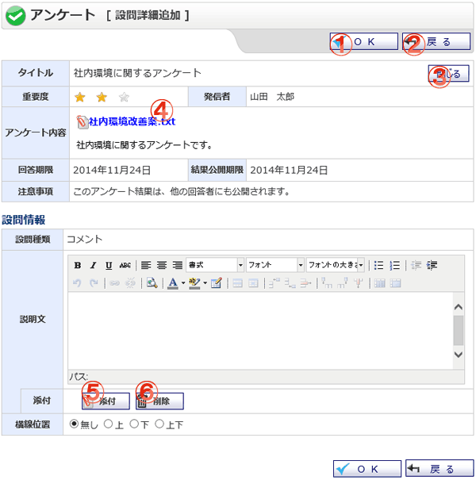

アンケート 設問詳細追加・編集(コメント)画面です。

機能説明
OKボタン入力された内容を保存し、アンケート作成画面へ遷移します。 |
戻るボタン遷移元の画面へ遷移します。 |
|---|---|
詳細/閉じるボタン詳細ボタンクリックで、アンケートの重要度・発信者・アンケート内容・回答期限・結果回答期限・注意事項を表示します。閉じるボタンクリックで、詳細表示欄を閉じます。 |
添付ファイル添付ファイル名をクリックすると、添付ファイルをダウンロードすることができます。 |
添付ボタン設問に添付ファイルを追加します。添付ファイル追加ポップアップ画面を表示します。 |
削除ボタン設問に追加した添付ファイルを削除します。 |
表示・入力項目説明
説明文
コメントに説明文を入力します。
位置
追加した添付ファイルの位置を選択します。「上」を選択すると説明文の上部に、「下」を選択すると説明文の下部に表示します。添付ファイルが存在するときだけ利用できます。
横線位置
コメントの上下に付ける横線表示区分を選択します。